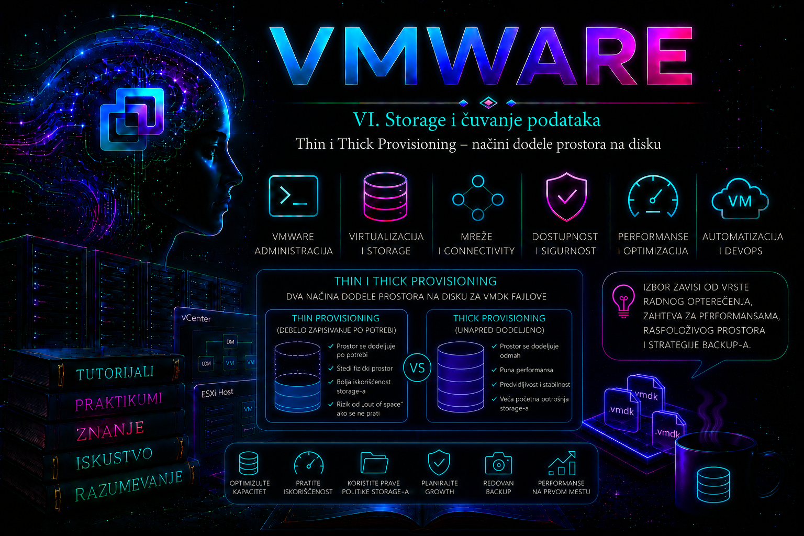

VMware

Provisioning virtuelnog diska određuje kako i kada VMware rezerviše fizički prostor na datastore-u za VMDK. Virtuelnoj mašini može biti prikazan disk kapaciteta 500 GB, ali način na koji se tih 500 GB odražava na stvarno zauzeće datastore-a zavisi od izabranog provisioning formata.
Kod thin provisioned diska prostor se alocira postepeno, kako operativni sistem gosta upisuje nove blokove. Kod thick provisioned diska puni deklarisani kapacitet rezerviše se odmah. Thick disk zatim može biti lazy zeroed ili eager zeroed, u zavisnosti od toga kada se rezervisani blokovi prvi put nuliraju.
Izbor provisioning formata utiče na:
- trenutno zauzeće datastore-a;
- brzinu kreiranja virtuelnog diska;
- mogućnost storage overcommit-a;
- operativni rizik od popunjavanja datastore-a;
- ponašanje pri prvom upisu u prethodno neiskorišćen blok;
- zahteve pojedinih aplikacija i VMware funkcionalnosti;
- trajanje migracije, kloniranja i konverzije;
- kapacitivno planiranje i monitoring;
- backup, snapshot i recovery procedure.
Provisioning format sam po sebi ne određuje kvalitet storage sistema. Thin disk na brzom i pravilno nadgledanom storage-u može pružiti odlične performanse, dok thick disk na preopterećenom storage sistemu može biti spor. Provisioning zato treba posmatrati zajedno sa latencijom, IOPS vrednostima, throughput-om, snapshot politikom, storage array mogućnostima i rastom poslovnih podataka.
Verzijski, platformski i terminološki okvir
Ova lekcija koristi klasične VMDK provisioning formate kako ih administratori vide u vSphere Client-u, ESXi alatima i aktuelnom VCF PowerCLI-ju. Na VMFS datastore-u izbor se tipično prikazuje kao Thin Provision, Thick Provision Lazy Zeroed i Thick Provision Eager Zeroed. Na NFS-u, vSAN-u i vVol datastore-ovima ista oznaka ne dokazuje isti fizički raspored blokova: stvarna rezervacija, efikasnost i reclamation zavise od protokola, storage politike i implementacije storage sistema.
Primeri su usmereni na savremena vSphere 8.x/9.x i VCF PowerCLI okruženja, ali se raspoložive opcije moraju potvrditi prema verziji ESXi/vCenter sistema, tipu datastore-a, storage policy-ju, licenci i podršci konkretnog array-a. Posebno, zahtev za eager-zeroed thick ne treba nasleđivati iz stare procedure bez ponovne provere: neke clustering funkcije i dalje ga mogu zahtevati, dok se kod policy-driven storage-a isti cilj ostvaruje drugačijim mehanizmom rezervacije.
Logički kapacitet i fizički zauzet prostor
Kod virtuelnih diskova moraju se razlikovati najmanje tri vrednosti:
- konfigurisani kapacitet – veličina diska koju vidi virtuelna mašina;
- provisioned space – ukupan potencijalni prostor koji je konfiguracija VM-a obećala;
- used space – prostor koji je trenutno fizički zauzet na datastore-u.
Primer:
Virtuelna mašina: DB-SRV01
Kapacitet VMDK-a: 500 GB
Provisioning format: Thin
Podaci upisani u gostu: 120 GB
VMDK zauzeće: približno 120 GB plus metadata
Maksimalni mogući rast: do 500 GBGostujući operativni sistem vidi disk od 500 GB. Međutim, datastore trenutno ne mora da bude opterećen celim tim kapacitetom. Kako gost upisuje nove blokove, VMDK raste.
Kod thick diska istog kapaciteta:
Virtuelna mašina: DB-SRV01
Kapacitet VMDK-a: 500 GB
Provisioning format: Thick
Podaci upisani u gostu: 120 GB
Prostor rezervisan: približno 500 GBNa taj način je kapacitet za osnovni disk rezervisan, ali to ne znači da su dodatni zahtevi za prostor eliminisani. Snapshot delta datoteke, swap, suspend, logovi, backup operacije i konsolidacija i dalje mogu zahtevati slobodan prostor izvan osnovnog thick diska.
Thin Provision
Thin provisioned VMDK počinje kao mali objekat koji sadrži neophodne metapodatke. Fizički blokovi na datastore-u alociraju se kada operativni sistem gosta prvi put upiše podatke u odgovarajuće logičke blokove.
Ako gost pročita blok koji nikada nije bio alociran, vraćaju se nule bez potrebe da je taj blok prethodno zauzimao fizički prostor.
Primer životnog ciklusa thin diska:
Konfigurisani kapacitet: 500 GB
Nakon kreiranja VM-a:
stvarno zauzeće ≈ nekoliko MB metapodataka
Posle instalacije sistema:
stvarno zauzeće ≈ 25 GB
Posle instalacije aplikacije:
stvarno zauzeće ≈ 60 GB
Posle šest meseci rada:
stvarno zauzeće ≈ 220 GB
Maksimalni rast:
do 500 GBPrednosti thin provisioninga
- Efikasnije korišćenje fizičkog storage kapaciteta.
- Brže kreiranje velikih virtuelnih diskova.
- Mogućnost da se VM-u dodeli kapacitet za očekivani rast bez trenutne pune fizičke potrošnje.
- Jednostavnije laboratorijsko i razvojno okruženje.
- Manja početna potrošnja prostora kod template-a i klonova.
- Mogućnost storage overcommit-a uz odgovarajući monitoring i kontrolu.
Rizici thin provisioninga
- Ukupan deklarisani kapacitet diskova može premašiti stvarni kapacitet datastore-a.
- Više VM-ova može istovremeno početi brzo da raste.
- Datastore može ostati bez prostora iako je prilikom kreiranja VM-ova delovao dovoljno velik.
- Brisanje datoteka u gostu ne mora automatski smanjiti fizičko zauzeće VMDK-a.
- Administrator može pogrešno tumačiti provisioned space kao trenutno zauzeće.
- Snapshot-i i backup poslovi mogu dodatno ubrzati potrošnju prostora.
Storage overcommit
Storage overcommit nastaje kada zbir maksimalnih kapaciteta thin diskova premašuje fizički slobodan prostor datastore-a.
Primer:
Datastore kapacitet: 4 TB
Rezerva za postojeće podatke: 1 TB
Trenutno slobodno: 3 TB
10 thin diskova × 500 GB: 5 TB provisioned
Trenutno fizički zauzeto: 1,4 TB
Potencijalni dodatni rast: 3,6 TB
Stvarno slobodno na datastore-u: 3 TBOkruženje trenutno radi, ali ako svi diskovi narastu do maksimalnog kapaciteta, nedostajaće najmanje 600 GB, bez uračunatih snapshot-a, swap datoteka i operativne rezerve.
Overcommit nije automatski greška. On može biti planski način efikasnijeg korišćenja storage-a, ali samo ako postoje:
- precizan inventar provisioned i used kapaciteta;
- alarmski pragovi;
- praćenje brzine rasta;
- dovoljna operativna rezerva;
- jasna procedura proširenja storage-a;
- odgovornost za reagovanje na upozorenja;
- kontrola snapshot i backup procesa;
- realna procena maksimalnog istovremenog rasta.
Thick Provision Lazy Zeroed
Kod Thick Provision Lazy Zeroed diska puni deklarisani kapacitet rezerviše se na datastore-u u trenutku kreiranja. Međutim, rezervisani blokovi ne nuliraju se unapred. Blok se nulira neposredno pre prvog upisa u njega.
Primer:
Kapacitet diska: 500 GB
Rezervisano odmah: 500 GB
Unapred nulirano: ne
Nuliranje bloka: pri prvom upisu
Brzina kreiranja: uglavnom brža od eager zeroed thickPrednosti lazy-zeroed thick diska
- Puni osnovni kapacitet rezerviše se odmah.
- Ne postoji rizik da osnovni VMDK ne može da naraste do deklarisane veličine zbog drugih VMDK diskova.
- Kreiranje je brže nego kod eager-zeroed thick diska, posebno za velike diskove.
- Jednostavnije kapacitivno planiranje u okruženjima bez thin overcommit-a.
Ograničenja lazy-zeroed thick diska
- Ceo deklarisani prostor zauzet je sa stanovišta datastore kapaciteta, čak i ako gost koristi mali deo.
- Prvi upis u prethodno nekorišćen blok uključuje operaciju nuliranja.
- Kreiranje velikog broja thick diskova može brzo rezervisati datastore.
- Thick disk ne rešava rizik rasta snapshot-a.
- Thick rezervacija na VMware sloju ne garantuje da underlying storage array nije dodatno thin provisioned.
Thick Provision Eager Zeroed
Kod Thick Provision Eager Zeroed diska puni deklarisani kapacitet rezerviše se odmah, a svi blokovi se nuliraju tokom kreiranja ili konverzije diska.
Primer:
Kapacitet diska: 500 GB
Rezervisano odmah: 500 GB
Unapred nulirano: da
Trajanje kreiranja: duže
Prvi upis: bez lazy-zeroing korakaPrednosti eager-zeroed thick diska
- Svi blokovi su alocirani i nulirani pre korišćenja.
- Nema dodatnog nuliranja bloka pri prvom upisu.
- Pogodan je kada konkretna aplikacija ili podržana VMware funkcionalnost zahteva ovaj format.
- Kapacitet osnovnog VMDK-a rezervisan je unapred.
- Predvidljiviji je u specifičnim, intenzivnim I/O scenarijima prvog upisa.
Ograničenja eager-zeroed thick diska
- Kreiranje i konverzija mogu dugo trajati.
- Operacija može proizvesti značajno storage opterećenje.
- Ceo kapacitet datastore-a zauzima se bez obzira na stvarnu količinu podataka u gostu.
- Nije automatski najbolji izbor za svaku bazu podataka ili svaki produkcioni VM.
- Snapshot-i i dalje mogu potrošiti dodatni slobodan prostor.
- Proširivanje velikog eager-zeroed thick diska može prouzrokovati duži VM stun dok se novi prostor nulira.
Poređenje provisioning formata
Karakteristika Thin Lazy Zeroed Thick Eager Zeroed Thick
-------------------------- --------- ------------------ -------------------
Puni prostor rezervisan Ne Da Da
Blokovi unapred nulirani Ne Ne Da
Brzina kreiranja Najbrža Brza Najsporija
Moguć storage overcommit Da Ne na VMFS sloju Ne na VMFS sloju
Rast fizičkog zauzeća Postepen Rezervisano odmah Rezervisano odmah
Prvi upis u novi blok Alokacija Nuliranje Direktan upis
Efikasnost kapaciteta Najveća Niža Niža
Potreban monitoring rasta Kritičan Potreban Potreban
Snapshot dodatni prostor Da Da DaProvisioning na VMware i storage array sloju
Provisioning može postojati na više slojeva. VMware thick disk ne mora značiti da je fizički storage prostor zaista rezervisan na nivou storage sistema.
Primer:
VMware VMDK: Thick 500 GB
VMFS datastore: vidi rezervisanih 500 GB
SAN LUN: 10 TB
Storage pool: array thin provisioning
Fizički diskovi: prostor se alocira po upisuU ovom slučaju VMware ne može da overcommit-uje konkretni VMDK unutar datastore-a, ali storage array može imati sopstveni overcommit. Ako se prati samo vCenter, a ne i array kapacitet, fizički storage pool može ostati bez prostora iako VMware datastore deluje pravilno.
Administratori zato moraju razmenjivati informacije između:
- VMware tima;
- storage tima;
- backup tima;
- aplikacionog tima;
- capacity management procesa.
Thin provisioning na različitim datastore tipovima
VMFS
Na VMFS datastore-u administrator direktno bira thin, lazy-zeroed thick ili eager-zeroed thick format za standardni VMDK. Format se vidi kroz vSphere Client, PowerCLI i karakteristike VMDK-a.
NFS
Na NFS datastore-u ponašanje fizičke alokacije zavisi i od NFS servera. VMware može prikazivati virtual disk format, ali stvarno zauzeće i space reclamation zavise od podrške storage sistema, protokola i njegovog internog načina alokacije.
vSAN
Kod vSAN-a kapacitet i rezervacija prostora primarno se kontrolišu kroz storage politike. Object Space Reservation određuje procenat logičkog kapaciteta objekta koji treba unapred rezervisati. Zato klasična VMFS terminologija thin i thick nije dovoljna za razumevanje stvarne vSAN potrošnje.
vVol
Kod vVol storage-a provisioning ponašanje zavisi od mogućnosti storage array-a i politike dodeljene virtuelnoj mašini ili disku. Array može implementirati thin provisioning na nivou pojedinačnih storage objekata.
Kako gost upisuje podatke u thin disk
Kada aplikacija upiše podatak u prethodno neiskorišćen logički blok, tok izgleda ovako:
Aplikacija
│
▼
Filesystem gosta
│
▼
Virtuelni storage kontroler
│
▼
ESXi proverava VMDK mapu blokova
│
▼
Blok još nije fizički alociran
│
▼
ESXi alocira datastore blok
│
▼
Podatak se upisuje
│
▼
Fizičko zauzeće VMDK-a rasteKod sledećeg upisa u već alocirani blok nije potrebna nova alokacija tog bloka. Zato thin provisioning overhead nije jednostavna stalna kazna na svakoj I/O operaciji, već je posebno povezan sa prvim upisom u nove blokove i ponašanjem underlying storage-a.
Brisanje podataka u gostu i fizičko zauzeće
Kada korisnik obriše datoteku u operativnom sistemu gosta, filesystem obično samo označi blokove kao slobodne za ponovno korišćenje. VMDK i datastore ne moraju automatski znati da se ti fizički blokovi mogu osloboditi.
Primer:
Thin VMDK kapacitet: 500 GB
Najveće prethodno zauzeće: 300 GB
Gost obrisao podatke: 200 GB
Gost trenutno koristi: 100 GB
VMDK na datastore-u: može i dalje zauzimati približno 300 GBOvo nije nužno greška. Gost je oslobodio prostor za sopstvenu ponovnu upotrebu, ali storage sloj još nije reclaim-ovao blokove.
Za automatsko ili ručno oslobađanje neiskorišćenih blokova potrebni su:
- podržan gostujući operativni sistem;
- podržan filesystem;
- virtuelni kontroler koji prosleđuje UNMAP ili TRIM informacije;
- podržan datastore i storage sistem;
- pravilna konfiguracija svih slojeva.
Pre pokretanja ručnih reclaim procedura treba proveriti aktuelnu Broadcom dokumentaciju, mogućnosti storage array-a i uticaj operacije na performanse.
Thin provisioning i snapshot-i
Kada se kreira snapshot, novi upisi preusmeravaju se u snapshot delta disk. Delta disk je prostor-efikasan i raste kako se menjaju blokovi.
Kod thin baznog diska rast datastore zauzeća može dolaziti iz dva pravca:
- bazni disk je već zauzeo prostor za ranije upisane blokove;
- delta disk raste zbog novih promena posle snapshot-a.
Kod thick baznog diska osnovni kapacitet jeste rezervisan, ali snapshot delta datoteka zahteva dodatni slobodan prostor izvan te rezervacije.
Primer:
Datastore kapacitet: 2 TB
Thick VMDK: 1,5 TB
Ostale VM datoteke: 200 GB
Slobodan prostor: 300 GB
Kreiran snapshot
Promene tokom nekoliko dana: 350 GB
Rezultat:
delta disk pokušava da premaši raspoloživih 300 GB
datastore ostaje bez prostoraThick disk zato ne garantuje da VM ne može zaustaviti rad zbog nedostatka prostora dok koristi snapshot.
Thin provisioning i swap datoteke
Kada se VM uključi, ESXi obično kreira .vswp datoteku čija veličina zavisi od konfigurisane memorije i memory reservation vrednosti.
Pojednostavljeno:
VM memorija: 32 GB
Memory reservation: 8 GB
Potencijalni .vswp: približno 24 GBAko datastore nema dovoljno prostora za potrebnu swap datoteku, VM možda neće moći da se pokrene. Provisioning diskova zato nije jedini kapacitivni zahtev VM-a.
Thin provisioning i template-i
Thin diskovi su pogodni za template-e i laboratorijske klonove jer veliki broj VM-ova može početi sa relativno malom fizičkom potrošnjom.
Međutim, posle masovnog deployment-a može doći do istovremenog rasta zbog:
- instalacije ažuriranja;
- generisanja logova;
- preuzimanja aplikacionih paketa;
- antivirusnih baza;
- pagefile ili swap aktivnosti;
- inicijalnog punjenja baza podataka;
- kreiranja snapshot-a pre konfiguracionih promena.
Kapacitet se zato planira prema očekivanom postdeployment rastu, a ne samo prema početnoj veličini klona.
Provisioning i performanse
Provisioning format može uticati na pojedine I/O operacije, ali nije jedini niti uvek glavni faktor performansi. Potrebno je razlikovati:
- trošak alokacije novog bloka kod thin diska;
- trošak nuliranja pri prvom upisu kod lazy-zeroed thick diska;
- duže početno kreiranje eager-zeroed thick diska;
- latenciju fizičkog storage-a;
- cache ponašanje;
- queue depth;
- multipathing;
- snapshot lanac;
- istovremeno opterećenje drugih VM-ova.
Na modernom storage sistemu razlika između provisioning formata može biti manja od razlike koju izazivaju preopterećen datastore, pogrešna multipathing politika ili veliki broj dugotrajnih snapshot-a.
Izbor eager-zeroed thick diska treba da bude zasnovan na stvarnom zahtevu, testovima i podržanoj arhitekturi, a ne na pretpostavci da je svaki thick disk automatski brži.
Kada koristiti Thin Provision
Thin provisioning je često prikladan za:
- razvojna i testna okruženja;
- virtuelne desktop sisteme;
- template-e i veliki broj sličnih VM-ova;
- servere čiji je početni kapacitet mali, a rast postepen;
- okruženja sa kvalitetnim monitoringom i capacity procesom;
- storage sisteme koji dobro podržavaju thin provisioning i reclamation;
- situacije u kojima je efikasnost kapaciteta važnija od pune unapred rezervisane veličine.
Kada koristiti Lazy-Zeroed Thick
Lazy-zeroed thick može biti prikladan kada:
- osnovni kapacitet mora biti rezervisan;
- nije potreban eager-zeroing;
- veliki disk treba relativno brzo kreirati;
- organizacija ne dozvoljava VMware storage overcommit;
- potrebna je jednostavnija predvidljivost kapaciteta.
Kada koristiti Eager-Zeroed Thick
Eager-zeroed thick koristi se kada:
- konkretna podržana funkcionalnost zahteva ovaj format;
- aplikaciona ili infrastrukturna dokumentacija izričito nalaže unapred nulirane blokove;
- izmereno opterećenje opravdava takav izbor;
- postoji dovoljno vremena i kapaciteta za kreiranje ili konverziju;
- administrator razume uticaj na storage tokom eager-zeroing operacije.
Sam izraz „produkcioni server” nije dovoljan razlog za eager-zeroed thick. Izbor treba dokumentovati i povezati sa tehničkim zahtevom.
Pregled provisioning formata u vSphere Client-u
Za pojedinačni VM:
Virtual Machine → Actions → Edit SettingsZa svaki disk mogu se proveriti:
- kapacitet;
- disk provisioning;
- datastore;
- storage policy;
- device node;
- disk mode;
- IOPS limit, ako postoji.
U prikazu VM storage podataka treba razlikovati:
- Provisioned Space – potencijalno obećani kapacitet;
- Used Space – stvarno trenutno zauzeće;
- Unshared Space – prostor koji nije deljen sa drugim objektima, u zavisnosti od tipa objekta i storage-a.
Pregled formata kroz ESXi Shell
Lista VM-ova:
vim-cmd vmsvc/getallvmsPrelazak u folder VM-a:
cd /vmfs/volumes/PROD-VMFS01/APP-SRV01Pregled diskova:
ls -lah *.vmdkDetalji VMDK-a:
vmkfstools -P APP-SRV01.vmdkPregled descriptor-a:
cat APP-SRV01.vmdk
Kod baznog VMFS diska vrednost createType može pomoći u identifikaciji strukture diska, ali administrator ne treba da menja descriptor radi konverzije. Za konverziju se koriste podržane VMware operacije.
Provera logičke i stvarne veličine
Komanda:
ls -lh APP-SRV01-flat.vmdkmože prikazati logičku veličinu datoteke, dok:
du -h APP-SRV01-flat.vmdkprikazuje fizički zauzet prostor na filesystem-u.
Primer thin diska:
ls -lh APP-SRV01-flat.vmdk
-rw------- 1 root root 500G APP-SRV01-flat.vmdk
du -h APP-SRV01-flat.vmdk
126G APP-SRV01-flat.vmdkLogički kapacitet je 500 GB, ali trenutno fizičko zauzeće iznosi približno 126 GB.
Kod thick diska obe vrednosti će biti približno jednake deklarisanom kapacitetu, uz razlike povezane sa načinom prikaza i metapodacima.
Pregled provisioning formata kroz VCF PowerCLI
Povezivanje sa vCenter Serverom:
Connect-VIServer -Server vcsa.lab.localPregled diskova jednog VM-a:
Get-VM -Name "APP-SRV01" |
Get-HardDisk |
Select-Object Parent,
Name,
CapacityGB,
StorageFormat,
Persistence,
FilenamePregled svih diskova:
Get-VM |
Get-HardDisk |
Select-Object Parent,
Name,
CapacityGB,
StorageFormat,
Persistence,
Filename |
Sort-Object Parent, NameSamo thin diskovi:
Get-VM |
Get-HardDisk |
Where-Object {
$_.StorageFormat -eq "Thin"
} |
Select-Object Parent,
Name,
CapacityGB,
FilenameSamo thick diskovi:
Get-VM |
Get-HardDisk |
Where-Object {
$_.StorageFormat -ne "Thin"
} |
Select-Object Parent,
Name,
CapacityGB,
StorageFormat,
FilenameIzveštaj o provisioned i used prostoru VM-ova
Get-VM |
Select-Object Name,
PowerState,
@{Name="ProvisionedGB";Expression={
[math]::Round($_.ProvisionedSpaceGB, 2)
}},
@{Name="UsedGB";Expression={
[math]::Round($_.UsedSpaceGB, 2)
}},
@{Name="UnusedProvisionedGB";Expression={
[math]::Round(
$_.ProvisionedSpaceGB - $_.UsedSpaceGB,
2
)
}} |
Sort-Object ProvisionedGB -DescendingOvaj izveštaj ne predstavlja savršenu meru reclaimable prostora. Snapshot-i, shared objekti, swap, suspend datoteke i način na koji storage prijavljuje kapacitet mogu uticati na vrednosti. Izveštaj služi za početnu analizu, a ne kao automatsko odobrenje za brisanje ili smanjivanje kapaciteta.
Izveštaj o datastore overcommit-u
Sledeći primer zbirno upoređuje provisioned i used prostor VM-ova povezanih sa datastore-om:
$report = foreach ($datastore in Get-Datastore) {
$vms = Get-VM -Datastore $datastore -ErrorAction SilentlyContinue
$provisioned = ($vms |
Measure-Object -Property ProvisionedSpaceGB -Sum).Sum
$used = ($vms |
Measure-Object -Property UsedSpaceGB -Sum).Sum
[PSCustomObject]@{
Datastore = $datastore.Name
Type = $datastore.Type
CapacityGB = [math]::Round($datastore.CapacityGB, 2)
FreeSpaceGB = [math]::Round($datastore.FreeSpaceGB, 2)
FreePercent = if ($datastore.CapacityGB -gt 0) {
[math]::Round(
($datastore.FreeSpaceGB /
$datastore.CapacityGB) * 100,
2
)
} else {
0
}
VMProvisionedGB = [math]::Round($provisioned, 2)
VMUsedGB = [math]::Round($used, 2)
ProvisionRatio = if ($datastore.CapacityGB -gt 0) {
[math]::Round(
$provisioned / $datastore.CapacityGB,
2
)
} else {
0
}
}
}
$report |
Sort-Object FreePercent |
Format-Table -AutoSizeProvisionRatio veći od 1 ukazuje da je zbir provisioned prostora VM-ova veći od fizičkog kapaciteta datastore-a. Međutim, precizna procena mora uključiti i ostale objekte i ponašanje storage-a.
Kreiranje thin diska kroz PowerCLI
$vm = Get-VM -Name "APP-SRV01"
$datastore = Get-Datastore -Name "PROD-VMFS01"
New-HardDisk -VM $vm `
-CapacityGB 100 `
-Datastore $datastore `
-StorageFormat ThinKreiranje thick diska kroz PowerCLI
Lazy-zeroed thick:
$vm = Get-VM -Name "APP-SRV01"
$datastore = Get-Datastore -Name "PROD-VMFS01"
New-HardDisk -VM $vm `
-CapacityGB 100 `
-Datastore $datastore `
-StorageFormat ThickEager-zeroed thick:
New-HardDisk -VM $vm `
-CapacityGB 100 `
-Datastore $datastore `
-StorageFormat EagerZeroedThickPre kreiranja velikog eager-zeroed thick diska treba proveriti:
- slobodan prostor;
- trenutnu storage latenciju;
- period niskog opterećenja;
- trajanje operacije;
- uticaj na druge VM-ove;
- da li je format zaista potreban.
Kreiranje diskova pomoću vmkfstools
Thin disk od 20 GB:
vmkfstools -c 20G -d thin LAB-THIN01.vmdkLazy-zeroed thick disk:
vmkfstools -c 20G -d zeroedthick LAB-LZT01.vmdkEager-zeroed thick disk:
vmkfstools -c 20G -d eagerzeroedthick LAB-EZT01.vmdkOve komande kreiraju VMDK na trenutnoj lokaciji. Pre izvršavanja obavezno treba potvrditi:
pwd
df -h
vdf -hU produkcionom okruženju standardno je bezbednije kreirati disk kroz vCenter Server ili PowerCLI, kako bi se automatski održavale inventory i konfiguracione veze.
Konverzija provisioning formata
Provisioning format ne treba menjati ručnim editovanjem descriptor-a. Podržani pristupi uključuju:
- Storage vMotion uz izbor novog formata;
- kloniranje VMDK-a komandom
vmkfstools -i; - inflating thin diska u eager-zeroed thick format;
- cold migration ili clone operaciju;
- storage-array specifične procedure kada su zvanično podržane.
Konverzija kroz Storage vMotion
U vSphere Client-u:
- Desni klik na virtuelnu mašinu.
- Izabrati Migrate.
- Izabrati Change storage only.
- Izabrati odredišni datastore.
- Izabrati Configure per disk ako različiti diskovi zahtevaju različit format.
- Za ciljni disk izabrati Thin, Thick ili Eager Zeroed Thick, prema dostupnim opcijama.
- Proveriti kompatibilnost.
- Pokrenuti migraciju i pratiti zadatak.
Ako se VM migrira nazad na isti datastore radi promene formata, dostupnost opcije zavisi od konkretnog okruženja i podržanog migracionog puta. Često se koristi privremeni drugi datastore.
Konverzija kroz PowerCLI migraciju
$vm = Get-VM -Name "LAB-APP01"
$target = Get-Datastore -Name "LAB-VMFS02"
Move-VM -VM $vm `
-Datastore $target `
-DiskStorageFormat ThinPrimer za eager-zeroed thick:
Move-VM -VM $vm `
-Datastore $target `
-DiskStorageFormat EagerZeroedThickPre korišćenja treba proveriti parametre aktuelne VCF PowerCLI verzije i kompatibilnost odredišnog datastore-a.
Konverzija kloniranjem pomoću vmkfstools
Thin u lazy-zeroed thick:
vmkfstools -i \
/vmfs/volumes/LAB-VMFS01/LAB-VM/LAB-DATA.vmdk \
/vmfs/volumes/LAB-VMFS02/CONVERTED/LAB-DATA-LZT.vmdk \
-d zeroedthickThin u eager-zeroed thick:
vmkfstools -i \
/vmfs/volumes/LAB-VMFS01/LAB-VM/LAB-DATA.vmdk \
/vmfs/volumes/LAB-VMFS02/CONVERTED/LAB-DATA-EZT.vmdk \
-d eagerzeroedthickThick u thin:
vmkfstools -i \
/vmfs/volumes/LAB-VMFS01/LAB-VM/LAB-DATA.vmdk \
/vmfs/volumes/LAB-VMFS02/CONVERTED/LAB-DATA-THIN.vmdk \
-d thinKod ove procedure novi VMDK se kreira kao poseban disk. Posle provere klona može se povezati sa recovery ili test VM-om. Originalni disk se ne briše dok se ne potvrde integritet, podaci i odobrenje za uklanjanje.
Inflate thin diska
Komanda:
vmkfstools -j LAB-DATA.vmdkalocira i nulira prethodno nealocirane blokove thin diska, pretvarajući ga u eager-zeroed thick format uz očuvanje postojećih podataka.
Pre inflate operacije potrebno je:
- isključiti VM ili ukloniti disk iz aktivne upotrebe prema zvaničnoj proceduri;
- proveriti da nema snapshot-a;
- obezbediti dovoljno slobodnog prostora za pun kapacitet;
- proceniti trajanje i storage opterećenje;
- imati proverenu rezervnu kopiju;
- proveriti da je izabrana descriptor, a ne podatkovna datoteka.
Praćenje datastore kapaciteta
ESXi prikaz:
esxcli storage filesystem list
vdf -hPowerCLI izveštaj:
Get-Datastore |
Select-Object Name,
Type,
CapacityGB,
FreeSpaceGB,
@{Name="UsedGB";Expression={
[math]::Round(
$_.CapacityGB - $_.FreeSpaceGB,
2
)
}},
@{Name="FreePercent";Expression={
if ($_.CapacityGB -gt 0) {
[math]::Round(
($_.FreeSpaceGB /
$_.CapacityGB) * 100,
2
)
} else {
0
}
}} |
Sort-Object FreePercentAlarmi za thin provisioning
Alarm ne treba da se zasniva samo na jednom procentualnom pragu. Veliki datastore može imati 10% slobodnog prostora koji predstavlja više stotina gigabajta, dok mali datastore sa 20% može imati premalo prostora za jednu konsolidaciju.
Dobar model koristi:
- procenat slobodnog prostora;
- apsolutni broj slobodnih gigabajta;
- brzinu rasta;
- broj i veličinu aktivnih snapshot-a;
- storage overcommit odnos;
- planirane deployment i backup poslove;
- vreme potrebno za proširenje storage-a.
Primer organizacionih pragova:
Informativno: slobodno manje od 25%
Upozorenje: slobodno manje od 20%
Kritično: slobodno manje od 10%
Hitno: manje od najvećeg očekivanog snapshot/restore zahtevaOvi pragovi su samo primer. Produkcioni pragovi određuju se prema veličini, stopi rasta, SLA zahtevima i storage procedurama.
Kapacitivna prognoza
Sama trenutna vrednost ne pokazuje kada će datastore postati kritičan.
Primer:
Slobodno danas: 900 GB
Prosečan dnevni rast: 30 GB
Operativna rezerva: 300 GB
Raspoloživo za normalan rast: 600 GB
Procena:
600 GB / 30 GB dnevno = približno 20 danaAko nabavka ili proširenje storage-a traje šest nedelja, incident je već u nastajanju iako je datastore trenutno 30% slobodan.
PowerCLI primer prognoze na osnovu dva merenja
# Prvo merenje sačuvati u CSV:
Get-Datastore |
Select-Object Name,
CapacityGB,
FreeSpaceGB,
@{Name="MeasuredAt";Expression={
Get-Date
}} |
Export-Csv "./datastore-baseline.csv" -NoTypeInformation
# Posle odgovarajućeg perioda učitati staro i novo stanje:
$old = Import-Csv "./datastore-baseline.csv"
$new = Get-Datastore |
Select-Object Name,
CapacityGB,
FreeSpaceGB
$forecast = foreach ($current in $new) {
$previous = $old |
Where-Object {
$_.Name -eq $current.Name
} |
Select-Object -First 1
if ($previous) {
$oldFree = [double]$previous.FreeSpaceGB
$growth = $oldFree - $current.FreeSpaceGB
[PSCustomObject]@{
Datastore = $current.Name
OldFreeGB = [math]::Round($oldFree, 2)
NewFreeGB = [math]::Round(
$current.FreeSpaceGB,
2
)
ConsumedGB = [math]::Round($growth, 2)
MeasurementAt = Get-Date
}
}
}
$forecast | Format-Table -AutoSizeZa ozbiljnu prognozu potrebna su višestruka merenja, istorijske metrike i izdvajanje jednokratnih događaja, kao što su migracije ili veliki restore poslovi.
Praktikum 1 – Poređenje thin i thick diskova na VMFS datastore-u
Cilj
Kreirati tri jednaka laboratorijska diska i uporediti logički kapacitet, fizičko zauzeće i vreme kreiranja.
Preduslovi
- laboratorijski VMFS datastore;
- najmanje 7 GB slobodnog prostora;
- SSH pristup ESXi hostu;
- diskovi se ne priključuju produkcionom VM-u.
Korak 1 – Priprema direktorijuma
cd /vmfs/volumes/LAB-VMFS01
mkdir provisioning-lab
cd provisioning-lab
pwdKorak 2 – Kreiranje thin diska
time vmkfstools -c 2G -d thin LAB-THIN.vmdkKorak 3 – Kreiranje lazy-zeroed thick diska
time vmkfstools -c 2G -d zeroedthick LAB-LZT.vmdkKorak 4 – Kreiranje eager-zeroed thick diska
time vmkfstools -c 2G -d eagerzeroedthick LAB-EZT.vmdkKorak 5 – Poređenje logičke veličine
ls -lhKorak 6 – Poređenje fizičkog zauzeća
du -h *-flat.vmdk
du -sh .Očekivani rezultat
- Sva tri diska imaju isti logički kapacitet.
- Thin disk početno zauzima veoma malo prostora.
- Oba thick diska rezervišu približno puni kapacitet.
- Eager-zeroed thick disk obično se kreira duže jer se blokovi nuliraju.
Čišćenje laboratorije
Nakon potvrde da diskovi nisu povezani ni sa jednim VM-om:
vmkfstools -U LAB-THIN.vmdk
vmkfstools -U LAB-LZT.vmdk
vmkfstools -U LAB-EZT.vmdk
cd ..
rmdir provisioning-lab
Za brisanje VMDK-a treba koristiti descriptor putanju i odgovarajuću VMware komandu, a ne ručno odvojeno brisati -flat.vmdk.
Praktikum 2 – Inventar provisioning formata i overcommit analiza
Cilj
Napraviti pregled svih diskova i proceniti kapacitivni rizik datastore-a.
Korak 1 – Inventar diskova
$disks = Get-VM |
Get-HardDisk |
Select-Object Parent,
Name,
CapacityGB,
StorageFormat,
Persistence,
Filename
$disks |
Sort-Object Parent, Name |
Format-Table -AutoSizeKorak 2 – Grupisanje po formatu
$disks |
Group-Object StorageFormat |
Select-Object Name,
Count,
@{Name="TotalCapacityGB";Expression={
[math]::Round(
($_.Group |
Measure-Object CapacityGB -Sum).Sum,
2
)
}} |
Format-Table -AutoSizeKorak 3 – VM provisioned i used pregled
Get-VM |
Select-Object Name,
@{Name="ProvisionedGB";Expression={
[math]::Round(
$_.ProvisionedSpaceGB,
2
)
}},
@{Name="UsedGB";Expression={
[math]::Round(
$_.UsedSpaceGB,
2
)
}},
@{Name="UsedPercent";Expression={
if ($_.ProvisionedSpaceGB -gt 0) {
[math]::Round(
($_.UsedSpaceGB /
$_.ProvisionedSpaceGB) * 100,
2
)
} else {
0
}
}} |
Sort-Object UsedPercent -DescendingKorak 4 – Datastore kapacitet
Get-Datastore |
Select-Object Name,
CapacityGB,
FreeSpaceGB,
@{Name="FreePercent";Expression={
[math]::Round(
($_.FreeSpaceGB /
$_.CapacityGB) * 100,
2
)
}} |
Sort-Object FreePercentKorak 5 – Izvoz
$disks |
Export-Csv "./disk-provisioning-inventory.csv" `
-NoTypeInformationAdministratorska analiza
Identifikovati:
- datastore-e sa niskim slobodnim prostorom;
- veliki broj thin diskova na istom datastore-u;
- VM-ove sa velikom razlikom između provisioned i used prostora;
- thick diskove koji su možda nepotrebno rezervisali kapacitet;
- eager-zeroed thick diskove bez dokumentovanog razloga.
Očekivani rezultat
Dobijen je inventar koji omogućava plansku, ali ne automatsku odluku o konverziji ili proširenju storage-a.
Praktikum 3 – Rast thin VMDK-a tokom upisa podataka
Cilj
Pratiti fizički rast thin diska dok Linux gost upisuje nove podatke.
Preduslovi
- laboratorijski Linux VM;
- novi thin disk od 10 GB;
- filesystem montiran na
/data; - dovoljno prostora na datastore-u.
Korak 1 – Početna provera u gostu
df -h /data
lsblkKorak 2 – Početna provera na ESXi hostu
cd /vmfs/volumes/LAB-VMFS01/LAB-LINUX01
ls -lh LAB-LINUX01-DATA01-flat.vmdk
du -h LAB-LINUX01-DATA01-flat.vmdkKorak 3 – Upis 2 GB podataka u gostu
sudo dd if=/dev/zero \
of=/data/testfile.bin \
bs=1M \
count=2048 \
status=progress
syncKorak 4 – Ponovna provera na ESXi hostu
du -h LAB-LINUX01-DATA01-flat.vmdk
vdf -hKorak 5 – Brisanje datoteke u gostu
sudo rm -f /data/testfile.bin
sync
df -h /dataKorak 6 – Ponovna provera VMDK-a
du -h LAB-LINUX01-DATA01-flat.vmdkOčekivani rezultat
VMDK raste tokom prvog upisa novih blokova. Posle brisanja datoteke gost prikazuje slobodan prostor, ali fizičko zauzeće VMDK-a ne mora odmah da se smanji.
Pouka
Slobodan prostor unutar gosta i slobodan prostor datastore-a nisu ista vrednost.
Praktikum 4 – Konverzija thin diska u thick format
Cilj
Klonirati ugašeni laboratorijski VMDK iz thin u eager-zeroed thick format i proveriti rezultat.
Preduslovi
- izvorni test VM je ugašen;
- nema snapshot-a;
- odredišni datastore ima dovoljno prostora za pun disk;
- postoji backup laboratorijskih podataka;
- radi se nad podatkovnim, a ne produkcionim diskom.
Korak 1 – Provera izvornog diska
vmkfstools -q \
/vmfs/volumes/LAB-VMFS01/LAB-APP01/LAB-DATA.vmdk
du -h \
/vmfs/volumes/LAB-VMFS01/LAB-APP01/LAB-DATA-flat.vmdkKorak 2 – Kreiranje odredišnog direktorijuma
mkdir -p \
/vmfs/volumes/LAB-VMFS02/CONVERTED-DISKSKorak 3 – Konverzija
vmkfstools -i \
/vmfs/volumes/LAB-VMFS01/LAB-APP01/LAB-DATA.vmdk \
/vmfs/volumes/LAB-VMFS02/CONVERTED-DISKS/LAB-DATA-EZT.vmdk \
-d eagerzeroedthickKorak 4 – Provera integriteta
vmkfstools -q \
/vmfs/volumes/LAB-VMFS02/CONVERTED-DISKS/LAB-DATA-EZT.vmdk
vmkfstools -x check \
/vmfs/volumes/LAB-VMFS02/CONVERTED-DISKS/LAB-DATA-EZT.vmdkKorak 5 – Poređenje zauzeća
du -h \
/vmfs/volumes/LAB-VMFS01/LAB-APP01/LAB-DATA-flat.vmdk
du -h \
/vmfs/volumes/LAB-VMFS02/CONVERTED-DISKS/LAB-DATA-EZT-flat.vmdkKorak 6 – Test povezivanje
Klonirani disk povezati sa izolovanim recovery VM-om kao postojeći hard disk. Pre mountovanja proveriti identitet filesystem-a i izbeći istovremeni zapis na original i klon u istoj mrežnoj ili aplikacionoj ulozi.
Očekivani rezultat
Novi disk ima isti logički sadržaj, ali zauzima puni kapacitet i koristi eager-zeroed thick format.
Praktikum 5 – Storage vMotion i promena formata
Cilj
Promeniti provisioning format test virtuelne mašine migracijom na drugi datastore.
Preduslovi
- dva datastore-a;
- odgovarajuće licence i privilegije;
- dovoljno prostora na odredištu;
- nema aktivnog konfliktnog zadatka;
- VM je laboratorijski.
Korak 1 – Početni pregled
Get-VM -Name "LAB-APP01" |
Get-HardDisk |
Select-Object Name,
CapacityGB,
StorageFormat,
FilenameKorak 2 – Provera odredišta
Get-Datastore -Name "LAB-VMFS02" |
Select-Object Name,
CapacityGB,
FreeSpaceGBKorak 3 – Migracija kroz vSphere Client
- Izabrati VM.
- Pokrenuti Migrate.
- Izabrati Change storage only.
- Izabrati odredišni datastore.
- Izabrati željeni format.
- Pregledati compatibility rezultate.
- Pokrenuti zadatak.
- Pratiti datastore latenciju i napredak.
Korak 4 – PowerCLI alternativa
$vm = Get-VM -Name "LAB-APP01"
$target = Get-Datastore -Name "LAB-VMFS02"
Move-VM -VM $vm `
-Datastore $target `
-DiskStorageFormat ThinKorak 5 – Završna provera
Get-VM -Name "LAB-APP01" |
Get-HardDisk |
Select-Object Name,
CapacityGB,
StorageFormat,
FilenameOčekivani rezultat
Diskovi su premešteni na odredišni datastore i prikazuju novi provisioning format. VM ostaje funkcionalan ako je migracija podržana i uspešno završena.
Praktikum 6 – Alarm, izveštaj i simulacija kapacitivnog incidenta
Cilj
Uvežbati rano otkrivanje rizika bez stvarnog popunjavanja datastore-a do kritičnog nivoa.
Bezbednosno pravilo
Ne popunjavati laboratorijski datastore do 100%. Simulacija se zasniva na izveštaju, privremeno smanjenom alarmnom pragu ili malom kontrolisanom upisu.
Korak 1 – Početno stanje
Get-Datastore -Name "LAB-VMFS01" |
Select-Object Name,
CapacityGB,
FreeSpaceGB,
@{Name="FreePercent";Expression={
[math]::Round(
($_.FreeSpaceGB /
$_.CapacityGB) * 100,
2
)
}}Korak 2 – Kreiranje privremenog laboratorijskog alarma
U vCenter Serveru napraviti alarm sa pragom koji će se lako aktivirati, na primer upozorenje kada zauzeće pređe trenutno stanje za mali procenat. Alarm jasno označiti kao laboratorijski i ukloniti nakon vežbe.
Korak 3 – Kontrolisani upis
U test VM-u sa thin diskom upisati mali fajl:
dd if=/dev/zero \
of=/data/capacity-test.bin \
bs=1M \
count=1024 \
status=progress
syncKorak 4 – Praćenje
Get-Datastore -Name "LAB-VMFS01" |
Select-Object Name,
CapacityGB,
FreeSpaceGBProveriti:
- da li je alarm aktiviran;
- da li se promena vidi u datastore statistici;
- koliko je vremena prošlo do osvežavanja;
- ko prima obaveštenje;
- da li alarm sadrži upotrebljive podatke.
Korak 5 – Uklanjanje test podataka
rm -f /data/capacity-test.bin
syncKorak 6 – Dokumentovanje postupka
Zabeležiti:
- alarmni prag;
- vreme detekcije;
- odgovornu osobu ili grupu;
- prvi korak odgovora;
- proceduru eskalacije;
- mogućnosti oslobađanja i proširenja prostora.
Očekivani rezultat
Potvrđeno je da monitoring uočava kapacitivni rizik pre potpunog popunjavanja datastore-a.
Scenario iz prakse 1 – Datastore je pun i thin VM je zaustavljen
Simptomi
- VM prijavljuje da nema prostora za virtuelni disk;
- aplikacija prestaje da odgovara;
- VM može biti stunovana;
- snapshot konsolidacija ne može da se završi;
- backup posao pada;
- datastore pokazuje gotovo nula slobodnog prostora.
Početna provera
esxcli storage filesystem list
vdf -hPowerCLI:
Get-Datastore |
Sort-Object FreeSpaceGB |
Select-Object Name,
CapacityGB,
FreeSpaceGBBezbedan redosled odgovora
- Identifikovati pogođeni datastore i VM-ove.
- Zaustaviti nove deployment, clone, backup i snapshot poslove.
- Ne brisati nasumično VMDK ili delta datoteke.
- Pronaći bezbedne potrošače: zastarele ISO slike, potvrđeno nepotrebne datoteke ili VM-ove pogodne za migraciju.
- Dodati kapacitet ili proširiti datastore ako procedura to dozvoljava.
- Migrirati VM ili disk na drugi datastore ako postoji dovoljno prostora.
- Tek nakon oslobađanja dovoljne rezerve nastaviti ili ponoviti snapshot konsolidaciju.
- Pratiti storage latenciju tokom oporavka.
Šta ne treba raditi
- ne birati velike datoteke samo po veličini i brisati ih;
- ne pokretati više konsolidacija istovremeno;
- ne pretpostavljati da je thick VM bezbedan od ovog incidenta;
- ne kliknuti Retry pre nego što je prostor stvarno obezbeđen;
- ne gasiti storage servise bez razumevanja posledica.
Scenario iz prakse 2 – Datastore ima mnogo prostora, ali storage array je skoro pun
Situacija
VMware datastore prikazuje 35% slobodnog prostora, ali storage tim prijavljuje da je fizički storage pool na 95%.
Uzrok
VMFS datastore se nalazi na thin-provisioned LUN-u. VMware vidi logički kapacitet LUN-a, dok storage array fizički alocira blokove iz zajedničkog pool-a. Drugi LUN-ovi takođe troše isti pool.
Analiza
- Proveriti datastore used i free prostor.
- Proveriti LUN potrošnju na array-u.
- Proveriti ukupan pool kapacitet.
- Proveriti snapshot-e i replike na storage array-u.
- Proveriti očekivani rast svih sistema koji dele pool.
- Proveriti space-reclamation funkcionalnost.
Pouka
Kapacitet se mora nadgledati na svakom sloju. VMware thick provisioning ne uklanja rizik thin provisioninga na storage array-u.
Scenario iz prakse 3 – Thick disk zauzima ceo datastore iako je gost gotovo prazan
Situacija
VM ima thick disk od 1 TB. Operativni sistem koristi samo 120 GB, ali datastore prikazuje približno 1 TB zauzeća.
Objašnjenje
To je očekivano ponašanje thick diska. Celi kapacitet rezervisan je pri kreiranju. Brisanje podataka u gostu ne smanjuje rezervisanu veličinu VMDK-a.
Moguća rešenja
- zadržati format ako je puna rezervacija opravdana;
- Storage vMotion-om konvertovati disk u thin format;
- klonirati disk u novi thin VMDK;
- premestiti VM na odgovarajući datastore;
- pre konverzije proveriti da li aplikacija ili funkcionalnost zahteva thick format.
Važno
Konverzija u thin ne menja logički kapacitet koji vidi gost. Ona menja način fizičke alokacije prostora.
Scenario iz prakse 4 – Thin disk ne smanjuje zauzeće posle brisanja 500 GB podataka
Situacija
Korisnik je obrisao veliku količinu podataka. df -h u Linux gostu prikazuje više slobodnog prostora, ali datastore ne pokazuje očekivano oslobađanje.
Uzrok
Filesystem gosta je blokove označio slobodnim, ali datastore ili storage sistem nije dobio ili obradio UNMAP informaciju. Thin VMDK zato zadržava ranije alocirane blokove.
Provera
- da li gost podržava discard ili TRIM;
- da li je filesystem montiran sa odgovarajućom podrškom;
- da li virtuelni kontroler prosleđuje komandu;
- da li datastore podržava reclamation;
- da li je storage array pravilno konfigurisan;
- da li snapshot sprečava potpuno oslobađanje blokova;
- da li se statistike osvežavaju sa kašnjenjem.
Bezbedan pristup
Ne pokretati agresivno nuliranje slobodnog prostora ili velike reclaim operacije bez procene storage opterećenja. Pratiti zvaničnu proceduru za konkretan gost, datastore i storage sistem.
Scenario iz prakse 5 – Eager-zeroed thick disk se veoma dugo kreira
Situacija
Administrator kreira disk od 4 TB i smatra da je zadatak blokiran jer procenat napretka sporo raste.
Objašnjenje
Eager-zeroed thick operacija rezerviše i nulira ceo prostor. Trajanje zavisi od:
- veličine diska;
- performansi storage-a;
- array offload podrške;
- trenutnog opterećenja;
- mrežne propusnosti kod mrežnog storage-a;
- drugih migracija i backup poslova.
Postupak
- Proveriti Recent Tasks i događaje.
- Proveriti datastore latenciju.
- Proveriti
hostd.logivmkernel.logsamo ako postoje greške. - Ne prekidati operaciju bez procene posledica.
- Za buduće promene planirati maintenance period.
Scenario iz prakse 6 – Produženje eager-zeroed thick diska izaziva duži VM stun
Situacija
Produkcioni VMDK povećan je za nekoliko terabajta. Tokom operacije VM privremeno ne odgovara.
Uzrok
Novi deo eager-zeroed thick diska mora biti alociran i nuliran. Kod velikog povećanja operacija može izazvati značajan stun i storage opterećenje.
Prevencija
- proveriti aktuelnu Broadcom dokumentaciju za konkretnu verziju;
- izvršiti promenu u maintenance periodu;
- proceniti veličinu povećanja;
- proveriti storage performanse i offload mogućnosti;
- obavestiti aplikacioni tim;
- imati plan povratka i backup;
- razmotriti dodavanje novog VMDK-a umesto veoma velikog proširenja, ako aplikacioni dizajn to dozvoljava.
Scenario iz prakse 7 – Snapshot je popunio datastore sa thick diskovima
Situacija
Svi produkcioni VMDK diskovi su thick provisioned, pa tim smatra da nema rizika od nedostatka prostora. Backup snapshot ostaje aktivan nekoliko dana i datastore se popunjava.
Uzrok
Thick rezervacija važi za bazni VMDK. Snapshot delta disk raste u dodatnom slobodnom prostoru datastore-a.
Provera
Get-VM |
Get-Snapshot |
Select-Object VM,
Name,
Created,
SizeGB |
Sort-Object CreatedNa ESXi hostu:
ls -lah \
/vmfs/volumes/PROD-VMFS01/DB-SRV01/*-000*.vmdkRešenje
- Zaustaviti uzrok produženog snapshot-a.
- Obezbediti dovoljan prostor za konsolidaciju.
- Proceniti storage opterećenje.
- Pokrenuti Delete ili Consolidate kroz vSphere.
- Pratiti zadatak i latenciju.
- Ispraviti backup proces i snapshot monitoring.
Scenario iz prakse 8 – Masovni deployment izaziva neočekivan rast thin datastore-a
Situacija
Iz template-a je kreirano 80 VM-ova. Početno zauzeće je malo, ali tokom prvog dana datastore brzo gubi slobodan prostor.
Uzroci
- operativni sistemi istovremeno preuzimaju ažuriranja;
- kreiraju pagefile ili swap;
- instaliraju aplikacije;
- generišu inicijalne logove;
- antivirus preuzima baze;
- configuration management upisuje pakete;
- backup kreira snapshot-e.
Prevencija
- deployment u talasima;
- kapacitivna simulacija pre masovnog kloniranja;
- praćenje datastore-a tokom rollout-a;
- ograničavanje paralelnih operacija;
- rezerva za postdeployment rast;
- provera template optimizacije.
Scenario iz prakse 9 – Storage vMotion u thin format nije oslobodio očekivani prostor
Situacija
Thick VMDK je migriran kao thin, ali fizičko zauzeće ostaje skoro jednako prethodnoj veličini.
Mogući uzroci
- gost je ranije upisao podatke preko velikog dela diska;
- obrisani blokovi nisu pravilno reclaim-ovani;
- disk sadrži nule koje nisu prepoznate kao reclaimable u konkretnom putu migracije;
- postoje snapshot-i;
- storage statistika još nije osvežena;
- odredišni storage drugačije prijavljuje alokaciju.
Pouka
Thin format znači da se nealocirani blokovi ne rezervišu unapred. Ne znači da će svaki ranije korišćen ili nuliran blok automatski nestati tokom svake migracije.
Scenario iz prakse 10 – PowerCLI izveštaj pogrešno klasifikuje disk
Situacija
Skripta koristi samo tekst u nazivu VMDK descriptor-a ili veličinu datoteke i zaključuje da je disk thin.
Problem
Naziv datoteke ne određuje provisioning format, a ls -lh prikazuje logičku veličinu. Za pouzdanu administraciju treba koristiti vSphere API podatke, Get-HardDisk, vSphere Client i odgovarajuće VMware alate.
Ispravka
Get-VM |
Get-HardDisk |
Select-Object Parent,
Name,
StorageFormat,
CapacityGB,
FilenameZa kritičnu promenu podatak treba proveriti iz najmanje dva izvora.
Scenario iz prakse 11 – Eager-zeroed thick je izabran za sve produkcione VM-ove
Situacija
Organizacija koristi pravilo „produkcija mora biti eager thick” bez merenja ili aplikacionog zahteva. Datastore-i su veliki, ali veoma slabo iskorišćeni.
Posledice
- nepotrebna rezervacija velikog kapaciteta;
- duže kreiranje i proširivanje diskova;
- veći troškovi storage-a;
- manja fleksibilnost;
- lažan osećaj da snapshot-i ne mogu popuniti datastore.
Korektivni pristup
- Popisati sve formate.
- Identifikovati stvarne funkcionalne zahteve.
- Izmeriti performanse.
- Odrediti klase workload-a.
- Definisati standard po klasi, a ne po opštem nazivu „produkcija”.
- Konvertovati diskove kontrolisano, uz change i rollback plan.
Scenario iz prakse 12 – Thin overcommit postoji, ali niko nije vlasnik alarma
Situacija
vCenter redovno generiše datastore warning, ali ga svi administratori smatraju „uobičajenim”. Tokom vikenda datastore ostaje bez prostora.
Uzrok
Monitoring postoji, ali operativni proces ne postoji. Alarm nema:
- vlasnika;
- rok reakcije;
- eskalaciju;
- definisanu rezervu;
- capacity plan;
- odobren način hitnog proširenja.
Korektivne mere
- odrediti odgovornu grupu;
- definisati warning i critical reakcije;
- uključiti trend rasta;
- automatski kreirati incident za kritične pragove;
- testirati obaveštenja;
- redovno pregledati otvorene alarme;
- ne koristiti permanentno alarm suppression bez zamenske kontrole.
Najčešće administratorske greške
- Mešanje konfigurisane veličine diska sa trenutnim fizičkim zauzećem.
- Storage overcommit bez monitoringa i procedure proširenja.
- Pretpostavka da thin disk automatski vraća prostor posle brisanja podataka u gostu.
- Pretpostavka da thick disk ne može doprineti popunjavanju datastore-a.
- Zanemarivanje snapshot prostora kod thick diskova.
- Izbor eager-zeroed thick formata za svaki produkcioni VM bez tehničkog razloga.
- Masovno kreiranje VM-ova bez procene postdeployment rasta.
- Praćenje samo VMware datastore-a, a ne i storage array pool-a.
- Ručno editovanje VMDK descriptor-a radi promene formata.
- Inflate ili konverzija diska bez dovoljno slobodnog prostora.
- Konverzija produkcionog diska bez proverenog backupa.
- Pokretanje više eager-zeroing ili Storage vMotion operacija istovremeno.
- Korišćenje samo procentualnog alarma bez apsolutnog praga.
- Ignorisanje brzine rasta datastore-a.
- Automatsko zaključivanje da je sav unused provisioned prostor moguće reclaim-ovati.
- Brisanje velikih VMDK datoteka radi oslobađanja prostora bez provere referenci.
- Izmena formata bez provere storage politike i kompatibilnosti.
- Očekivanje da će prelazak na thin smanjiti logički kapacitet u gostu.
- Praćenje samo pojedinačnih VM-ova bez zbirne datastore analize.
- Neproveravanje da li storage array koristi dodatni thin provisioning.
Administratorske prakse
Definisati provisioning standard prema klasi workload-a
Umesto jednog pravila za sve VM-ove, definisati klase:
DEV-TEST:
Thin, kontrolisan overcommit, niži capacity pragovi
STANDARD-PROD:
Thin ili Thick prema rastu i SLA zahtevima
DATABASE-HIGH-IO:
Format prema izmerenim performansama i zahtevu proizvođača
SPECIAL-CLUSTER:
Format koji zahteva podržana clustering funkcionalnost
VDI:
Thin uz strogo praćenje masovnog rastaDokumentovati razlog za eager-zeroed thick
Za svaki eager-zeroed thick disk treba moći odgovoriti:
- koja funkcionalnost ga zahteva;
- koja dokumentacija to potvrđuje;
- da li zahtev još postoji;
- kakav je uticaj na kapacitet;
- ko je odobrio izuzetak.
Pratiti i provisioned i used kapacitet
Used pokazuje sadašnje stanje. Provisioned pokazuje potencijalnu obavezu. Za thin okruženje oba podatka su neophodna.
Pratiti brzinu rasta
Izveštaj treba da prikazuje:
- rast u prethodna 24 sata;
- sedmodnevni trend;
- mesečni trend;
- najveće potrošače;
- predviđeni datum dostizanja kritičnog praga.
Održavati operativnu rezervu
Rezerva mora pokriti:
- normalan rast thin diskova;
- snapshot delta rast;
- backup i konsolidaciju;
- swap i suspend datoteke;
- Storage vMotion ili recovery operaciju;
- neočekivani aplikacioni rast;
- vreme potrebno za proširenje storage-a.
Razdvojiti warning, critical i emergency postupak
Primer:
Warning:
analiza rasta, potvrda kapacitivnog plana
Critical:
ograničavanje novih deployment-a, priprema migracije ili proširenja
Emergency:
zaustavljanje nebitnih storage poslova, hitno obezbeđivanje prostora,
uključivanje storage i aplikacionog timaNe koristiti snapshot kao kapacitivnu rezervu
Snapshot povećava, a ne smanjuje potrebu za slobodnim prostorom. Pre kreiranja velikog ili dugotrajnog snapshot-a treba proveriti datastore i očekivanu stopu promena VM-a.
Proveravati storage array sloj
Za svaki datastore dokumentovati:
- da li je LUN thin ili thick na array-u;
- koji storage pool koristi;
- koliki je pool overcommit;
- koji alarmi postoje;
- ko je odgovoran za proširenje;
- da li je space reclamation podržan;
- da li postoje array snapshot-i i replike.
Konverzije raditi migracijom ili kloniranjem
Podržana migracija ili kloniranje stvaraju novi disk odgovarajućeg formata i izbegavaju rizične ručne izmene metapodataka.
Pre konverzije proveriti snapshot-e
Snapshot lanac komplikuje procenu kapaciteta i migraciju. Pre promene:
Get-VM -Name "APP-SRV01" |
Get-SnapshotAko snapshot postoji, prvo treba utvrditi njegovu svrhu, starost i bezbedan plan uklanjanja.
Ograničiti paralelne velike storage operacije
Eager zeroing, kloniranje, Storage vMotion, backup i snapshot konsolidacija mogu istovremeno opteretiti isti storage sistem. Operacije se raspoređuju prema mogućnostima infrastrukture.
Testirati promenu na realnom workload-u
Sintetički benchmark može biti koristan, ali odluku treba potvrditi merenjem stvarne aplikacije, latencije i vršnog opterećenja.
Automatizovati izveštavanje, ne automatsko brisanje
Skripta može pronaći velike razlike između provisioned i used prostora ili stare diskove. Ne treba samostalno da briše ili konvertuje VMDK bez vlasnika, change odobrenja i recovery plana.
Operativna kontrolna lista pre kreiranja diska
- Koji kapacitet gost trenutno zahteva?
- Koliki je očekivani godišnji rast?
- Koji datastore i storage policy treba koristiti?
- Da li je thin overcommit dozvoljen?
- Da li aplikacija zahteva thick ili eager-zeroed thick?
- Da li storage array koristi sopstveni thin provisioning?
- Kolika je datastore operativna rezerva?
- Da li će disk biti uključen u backup?
- Kako će se disk mapirati u gostu?
- Ko je vlasnik kapaciteta?
Operativna kontrolna lista pre konverzije
- Potvrditi VM, disk, putanju i trenutni format.
- Potvrditi ciljni format i razlog promene.
- Proveriti backup i restore mogućnost.
- Proveriti snapshot-e.
- Proveriti slobodan prostor na izvoru i odredištu.
- Proveriti storage policy kompatibilnost.
- Proceniti trajanje i I/O uticaj.
- Izabrati maintenance period ako je potreban.
- Obezbediti rollback ili zadržati originalni disk.
- Dokumentovati rezultate posle promene.
Operativna kontrolna lista za datastore sa thin diskovima
Dnevno
- proveriti kritične capacity alarme;
- proveriti datastore-e sa ubrzanim rastom;
- proveriti neuspešne snapshot i backup poslove;
- proveriti VM-ove zaustavljene zbog nedostatka prostora;
- proveriti storage array capacity alarme.
Nedeljno
- izvesti provisioned i used kapacitet;
- pregledati overcommit odnos;
- pronaći najbrže rastuće VM-ove;
- pregledati stare snapshot-e;
- proveriti planirane deployment-e i restore testove;
- proveriti dovoljan prostor za konsolidaciju.
Mesečno
- ažurirati capacity prognozu;
- proveriti opravdanost provisioning standarda;
- uporediti VMware i array potrošnju;
- proveriti alarmne pragove;
- analizirati ponavljajuće incidente;
- testirati hitnu proceduru proširenja;
- pregledati eager-zeroed thick izuzetke.
Najčešće korišćene ESXi CLI komande
# Lista datastore-a i kapacitet
esxcli storage filesystem list
# Sažet pregled zauzeća datastore-a
vdf -h
# Lista registrovanih VM-ova
vim-cmd vmsvc/getallvms
# Prelazak u VM folder
cd /vmfs/volumes/DATASTORE/VM-NAME
# Pregled VMDK datoteka
ls -lah *.vmdk
# Logička veličina podatkovne datoteke
ls -lh VM-DISK-flat.vmdk
# Stvarno zauzeće podatkovne datoteke
du -h VM-DISK-flat.vmdk
# Pregled VMDK descriptor-a
cat VM-DISK.vmdk
# Informacije o VMDK-u
vmkfstools -P VM-DISK.vmdk
# Provera disk lanca
vmkfstools -q VM-DISK.vmdk
# Provera integriteta
vmkfstools -x check VM-DISK.vmdk
# Thin disk
vmkfstools -c 20G -d thin NEW-THIN.vmdk
# Lazy-zeroed thick disk
vmkfstools -c 20G -d zeroedthick NEW-LZT.vmdk
# Eager-zeroed thick disk
vmkfstools -c 20G -d eagerzeroedthick NEW-EZT.vmdk
# Kloniranje u thin format
vmkfstools -i SOURCE.vmdk TARGET-THIN.vmdk -d thin
# Kloniranje u lazy-zeroed thick format
vmkfstools -i SOURCE.vmdk TARGET-LZT.vmdk -d zeroedthick
# Kloniranje u eager-zeroed thick format
vmkfstools -i SOURCE.vmdk TARGET-EZT.vmdk -d eagerzeroedthick
# Inflate thin diska u eager-zeroed thick
vmkfstools -j VM-DISK.vmdk
# Bezbedno uklanjanje VMDK-a preko descriptor-a
vmkfstools -U VM-DISK.vmdk
# Praćenje storage performansi
esxtop
# u – storage device prikaz
# v – virtual disk prikazNajčešće korišćene PowerCLI komande
# Povezivanje sa vCenter Serverom
Connect-VIServer -Server vcsa.lab.local
# Svi diskovi jednog VM-a
Get-VM -Name "APP-SRV01" |
Get-HardDisk
# Format, kapacitet i lokacija
Get-VM -Name "APP-SRV01" |
Get-HardDisk |
Select-Object Parent,
Name,
CapacityGB,
StorageFormat,
Persistence,
Filename
# Svi thin diskovi
Get-VM |
Get-HardDisk |
Where-Object {
$_.StorageFormat -eq "Thin"
}
# Svi thick diskovi
Get-VM |
Get-HardDisk |
Where-Object {
$_.StorageFormat -ne "Thin"
}
# Grupisanje po formatu
Get-VM |
Get-HardDisk |
Group-Object StorageFormat |
Select-Object Name, Count
# Thin disk od 100 GB
New-HardDisk -VM "APP-SRV01" `
-CapacityGB 100 `
-Datastore "PROD-VMFS01" `
-StorageFormat Thin
# Lazy-zeroed thick disk
New-HardDisk -VM "APP-SRV01" `
-CapacityGB 100 `
-Datastore "PROD-VMFS01" `
-StorageFormat Thick
# Eager-zeroed thick disk
New-HardDisk -VM "APP-SRV01" `
-CapacityGB 100 `
-Datastore "PROD-VMFS01" `
-StorageFormat EagerZeroedThick
# VM provisioned i used prostor
Get-VM |
Select-Object Name,
ProvisionedSpaceGB,
UsedSpaceGB
# Datastore kapacitet
Get-Datastore |
Select-Object Name,
Type,
CapacityGB,
FreeSpaceGB,
@{Name="FreePercent";Expression={
[math]::Round(
($_.FreeSpaceGB /
$_.CapacityGB) * 100,
2
)
}}
# Snapshot-i
Get-VM |
Get-Snapshot |
Select-Object VM,
Name,
Created,
SizeGB
# Storage migracija i thin konverzija
Move-VM -VM "LAB-APP01" `
-Datastore "LAB-VMFS02" `
-DiskStorageFormat Thin
# Storage migracija i eager-zeroed thick konverzija
Move-VM -VM "LAB-APP01" `
-Datastore "LAB-VMFS02" `
-DiskStorageFormat EagerZeroedThick
# Izvoz inventara diskova
Get-VM |
Get-HardDisk |
Select-Object Parent,
Name,
CapacityGB,
StorageFormat,
Persistence,
Filename |
Export-Csv "./provisioning-report.csv" `
-NoTypeInformation
# Prekid sesije
Disconnect-VIServer -Server vcsa.lab.local `
-Confirm:$falseZavršna kontrolna tačka
Lekcija je završena kada administrator može, bez nagađanja i bez oslanjanja na naziv datoteke, da:
- razlikuje konfigurisani, provisioned, used i reclaimable kapacitet i objasni zašto nisu međusobno zamenljivi;
- identifikuje format svakog VMDK-a kroz vSphere Client i VCF PowerCLI, a na VMFS-u potvrdi logičko i fizičko zauzeće read-only ESXi komandama;
- izračuna datastore overcommit, uključi ne-VMDK potrošače i dokumentuje rezervu za rast, snapshot, konsolidaciju, swap, backup i recovery;
- izabere thin, lazy-zeroed thick ili eager-zeroed thick prema dokazanom zahtevu workload-a i karakteristikama odredišnog storage-a;
- objasni ceo reclamation put od gosta do VMDK-a, datastore-a i storage array-a i potvrdi podršku pre slanja UNMAP/TRIM zahteva;
- izvede laboratorijsku konverziju migracijom ili kloniranjem, proveri integritet i zadrži bezbedan rollback;
- trijažira incident nedostatka prostora od najmanje invazivnih provera ka korektivnoj promeni, sa dokazima, vlasnikom i post-incident dokumentacijom.
Pitanja za proveru znanja
- Koja je razlika između konfigurisane veličine VMDK-a i stvarno zauzetog prostora?
- Kada thin disk fizički alocira datastore blok?
- Koja je razlika između lazy-zeroed thick i eager-zeroed thick diska?
- Zašto je kreiranje eager-zeroed thick diska sporije?
- Šta predstavlja storage overcommit?
- Zašto overcommit nije automatski greška?
- Koje kontrole su potrebne za bezbedan overcommit?
- Zašto brisanje datoteke u gostu ne mora smanjiti VMDK zauzeće?
- Šta je potrebno za UNMAP ili TRIM reclamation?
- Zašto snapshot može popuniti datastore i kod thick diska?
- Da li thick VMDK znači da je prostor rezervisan i na storage array-u?
- Koja je razlika između VMware thin provisioninga i array thin provisioninga?
- Kada je thin format prikladan izbor?
- Kada eager-zeroed thick može biti opravdan?
- Zašto naziv „produkcioni VM” nije dovoljan razlog za eager thick?
- Kako se kroz PowerCLI prikazuje provisioning format?
- Kako se kroz ESXi Shell porede logička i fizička veličina thin diska?
- Čemu služi
vmkfstools -j? - Zašto se format ne menja ručnim editovanjem descriptor-a?
- Koji su bezbedni načini promene provisioning formata?
- Zašto Storage vMotion u thin format ne mora osloboditi sav očekivani prostor?
- Koji dodatni prostor VM zahteva osim osnovnog VMDK-a?
- Zašto je brzina rasta važnija od same trenutne slobodne vrednosti?
- Koje podatke treba pratiti na storage array-u?
- Koje provere su obavezne pre konverzije produkcionog diska?
Zaključak
Thin i thick provisioning određuju način na koji se logički kapacitet virtuelnog diska pretvara u fizičku potrošnju storage prostora. Thin disk koristi kapacitet postepeno, dok thick disk rezerviše puni deklarisani prostor odmah. Lazy-zeroed i eager-zeroed thick razlikuju se po tome kada se rezervisani blokovi nuliraju.
Thin provisioning omogućava efikasnije korišćenje storage-a, brže kreiranje diskova i fleksibilniji rast infrastrukture. Njegova korist postoji samo kada je praćen odgovornim capacity management procesom. Bez inventara, alarma, trendova i operativne rezerve, thin provisioning može pretvoriti logičku fleksibilnost u produkcioni incident.
Thick provisioning pojednostavljuje rezervaciju osnovnog VMDK kapaciteta, ali ne uklanja potrebu za monitoringom. Snapshot-i, swap, suspend datoteke, backup i konsolidacija i dalje koriste dodatni prostor. Thick VMDK takođe ne dokazuje da je fizički kapacitet rezervisan na storage array sloju.
Eager-zeroed thick nije univerzalni „najbolji” ili „najbrži” format. Njegova primena treba da bude povezana sa konkretnim tehničkim zahtevom, podržanom funkcionalnošću ili izmerenim I/O potrebama. U suprotnom može nepotrebno povećati potrošnju storage-a i produžiti kreiranje, migraciju i proširivanje diskova.
Najvažnija administratorska veština nije izbor jednog formata za sve sisteme, već sposobnost da se provisioning uskladi sa vrstom workload-a, stopom rasta, backup politikom, SLA zahtevima, storage arhitekturom i mogućnošću oporavka.
Pouzdano okruženje prati najmanje četiri nivoa: kapacitet unutar gosta, fizičko zauzeće VMDK-a, slobodan prostor datastore-a i stvarni kapacitet storage pool-a. Tek povezivanjem tih podataka administrator može razumeti da li sistem zaista ima prostor ili samo privremeno izgleda kao da ga ima.
Dobra praksa zato podrazumeva kontrolisan overcommit, dokumentovane izuzetke, rano upozoravanje, redovno praćenje trenda, podržane metode konverzije i proverenu rezervnu kopiju pre svake rizične promene. Provisioning tada postaje sredstvo efikasnog upravljanja infrastrukturom, a ne skriveni izvor prekida rada.